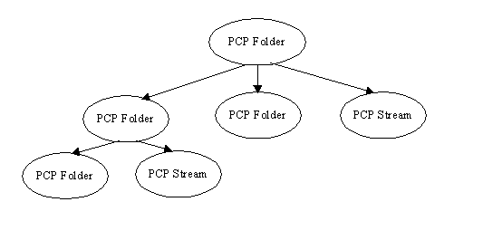

The Package Content Provider
Preface
The Package Content Provider ( PCP ) implements a Content Provider for the Universal Content Broker (UCB). It provides access to the content of ZIP/JAR archive files. Possibly it will be extended to support other packages ( like OLE storages ) in the future.
PCP Contents
The PCP provides two different types of contents: Stream and Folder.
A PCP Stream is a content which represents a file inside a package. It is always contained in a PCP Folder. A PCP Stream has no children.
A PCP Folder is a container for other PCP Folders and PCP Streams.

Creation
Of New PCP Contents
PCP Folders implement the interface XContentCreator. PCP Streams and PCP Folders support the command „insert“. That's why all PCP Folders can create new PCP Folders and PCP Streams. To create a new child of a PCP Folder:
Let the parent folder create a new content by calling its createNewContent-method. The content type to use for new folders is application/vnd.sun.star.pkg-folder. To create a new stream, use the type string application/vnd.sun.star.pkg-stream.
Set a title at the new folder/stream. ( Let the new child execute a setPropertyValues – command, which sets at least the property „Title“ to a non-empty value ).
Let the new child ( not the parent! ) execute the command „insert“. This will commit the creation process. For Streams, you need to supply the implementation of an XInputStream with the command's parameters, that provides access to the stream data.
Another, more convenient way for creating streams is simply to assemble the URL for the new content ( last part of the path will become the title of the new stream ) and to obtain a Content object for that URL from the UCB. Then let the content execute the command "insert". The command will fail, if you set the command's parameter "ReplaceExisting" to false and there is already a stream with the title given by the content's URL.
URL Scheme for PCP Contents
Each PCP content has an identifier corresponding to the following scheme:
package-URL = "vnd.sun.star.pkg://" orig-URL [ abs-path ]
abs-path = "/" path-segments
path-segements = segment *( "/" segment )
segment = pchar
pchar = unreserved | escaped | ":" | "@" | "&" | "=" | "+" | "$" | ","
unreserved = alphanum | mark
mark = "-" | "_" | "." | "!" | "~" | "*" | "'" | "(" | ")"
escaped = "%" hex hex
orig-URL = 1 *( unreserved | escaped | "$" | "," | ";" | ":" | "@" | "&" | "&" | "=" | "+"
Examples:
vnd.sun.star.pkg://file:%2F%2F%2Fe:%2Fmy.xsw/ ( The root folder of the package located at file:///e:/my.xsw )
vnd.sun.star.pkg://file:%2F%2F%2Fe:%2Fmy.xsw/Content ( The folder/stream named "Content" that is contained in the root folder of the located at file:///e:/my.xsw )
vnd.sun.star.pkg://file:%2F%2F%2Fe:%2Fmy.xsw/Content%20A ( The folder/stream named "Content A" that is contained in the root folder of the located at file:///e:/my.xsw )
Appendix
The following table gives an overview of the different PCP contents.
|
|
UCB Type (returned by XContent::getContentType ) |
Properties |
Commands |
Interfaces |
|---|---|---|---|---|
|
Stream |
application/vnd.sun.star.pkg-stream |
[readonly] ContentType [readonly] IsDocument [readonly] IsFolder MediaType [readonly] Size Title Compressed1 |
getCommandInfo getPropertySetInfo getPropertyValues setPropertyValues insert delete open |
lang::XTypeProvider, lang::XServiceInfo, lang::XComponent, ucb::XContent, ucb::XCommandProcessor, beans::XPropertiesChangeNotifier, beans::XPropertyContainer, beans::XPropertySetInfoChangeNotifier, ucb::XCommandInfoChangeNotifier, container::XChild |
|
Folder |
application/vnd.sun.star.pkg-folder |
[readonly] ContentType [readonly] IsDocument [readonly] IsFolder MediaType [readonly] Size Title |
getCommandInfo getPropertySetInfo getPropertyValues setPropertyValues insert delete open transfer2 flush3 |
same as PCP Stream plus ucb::XContentCreator |
1The property "Compressed" is introduced by package streams. It allows you to explecitly state whether you want a stream to be compressed or not. The default value of this property will be determined according to the value suggested by the underlying packager implementation.
2The „transfer“ command only transfers PCP-folders/-streams to other PCP folders. It does not handle contents with a URL scheme other then the PCP-URL-scheme.
3"flush" is a command introduced by the PCP Folder. It takes a void-argument and returns void. This command is used to write unsaved changes to the underlying package file. Note that the current implementation of PCP contents never flush automatically! Operations, which require a flush to get persistent, are: "setPropertyValues( Title | MediaType ) ", "delete", "insert".